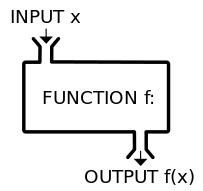
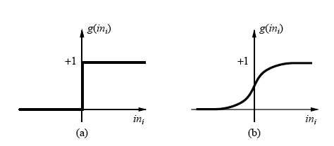
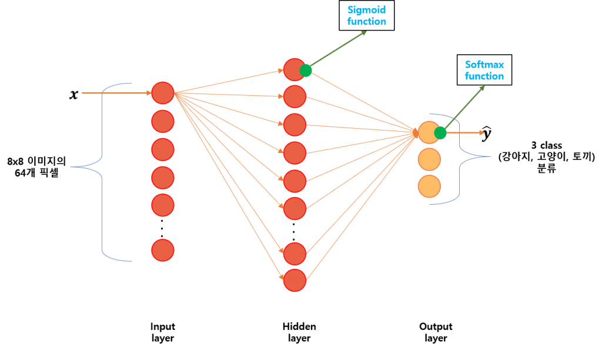

Activation function of Multinomial Classification : Softmax function
딥러닝은 일반적으로 알고 있는 뉴럴네트워크가 심화된것을 의미합니다.
보통 뉴럴네트워크는 특정 데이터( input )를 사용하여 특정범주(output)로 분류하는 일에 사용됩니다. 분류는 주가가 상승(1)인지 하락(0인지) 혹은 암이 양성(1)인지 악성(0)인지를 판단하는 이항분류와 3가지 이상의 그룹 분류하는 다항분류로 구분할 수 있습니다.

위의 박스에 어떤 데이터(input)을 넣었을때 박스 안에서 어떤 일이 일어나고 특정 결과(output)를 산출해줍니다. 여기서 어떤 일이 일어나게 하는 것을 활성화함수라고 할 수 있습니다. 입력을 받아서 특정 값으로 바꿔주는 일종의 변환기입니다.

일반적으로 뉴럴네트워크에서는 step function(a), sigmoid function(b)가 활성화 함수로 사용됩니다.
step function은 0값을 기준으로 출력값이 0 혹은 1로 출력되는 반면 sigmoid function는 0에서 1사이의 값이 매끄럽게 출력됩니다. 이러한 이유로 뉴럴네트워크에서는 sigmoid function이 활성화함수로 많이 사용됩니다.
하지만 3가지 이상의 범주로 분류하는 다항분류의 경우 뉴럴네트워크의 outlayer에서는 softmax function 가 많이 사용됩니다. 특히 분류기(classifier)관련 응용은 Softmax 함수를 쓸 경우 더 좋은 결과를 얻을 수 있습니다.

8×8의 특정이미지를 강아지, 고양이, 토끼로 분류하는 학습으로 예시를 들어보겠습니다.

A 학습 데이터에서 출력레이어(마지막 레이어) 뉴런의 출력 값이 (강아지, 고양이, 토끼) =(0.5, 0.2, 0.1), B 학습 데이터에서 출력레이어(마지막 레이어) 뉴런의 출력 값이 (강아지, 고양이, 토끼) = (0.9, 0.8, 0.7)와 같은 결과가 출력되었다고 가정한다면 둘 중 어떤 데이터가 강이지에 가까운 것일까요?
A 학습 데이터의 경우 강아지인 절대 확률(0.5)은 낮지만 고양이(0.2), 토끼(0.1)에 비해 더 가깝다고 할 수 있지만 B 학습 데이터의 경우 0.9, 0.8, 0.7로 3개의 클래스에 대한 확률이 거의 비슷하므로 잘 구분하기 어렵습니다. 이렇게 다중 클래스(Multinomial class)를 구분할 경우 마지막 뉴런의 활성화 함수로 sigmoid를 사용하면 출력 값을 공정하게 평가하기 어렵습니다.
따라서 아래 식과 같이 뉴런의 출력 값을 지수함수를 통해 각각의 값의 편차를 확대시킨 뒤 정규화 하는 Softmax function을 사용합니다.
앞서 sigmoid 함수를 적용하여 구한 확률들을 이용하여 A학습 데이터들의 z 값을 구하면

Sigmoid 함수를 적용하기 전 Z 값은 (0, -1.39, -2.2)와 같으며 Softmax 함수를 적용하면
(0.74, 0.18, 0.08) 로 기존 sigmoid 함수 (0.5, 0.2, 0.1)에 비해 출력값이 더욱 뚜렷하게 구분됩니다.
또한 B학습 데이터들의 z 값을 구하면
sigmoid 함수를 적용하기 전 Z값은 (2.2, 1.39, 0.85)와 같으며 Softmax 함수를 적용하면
(0.59, 0.26, 0.15)로 기존 (0.9, 0.8, 0.7)에 비해 출력값이 뚜렷하게 구분되어 sigmoid 함수보다 공정하게 평가하기 용이합니다.
